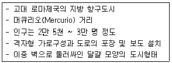
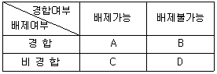
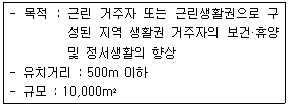
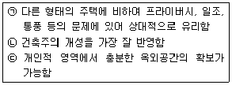
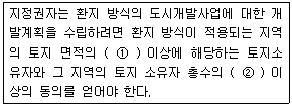
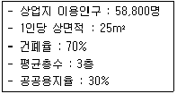
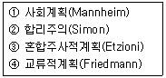
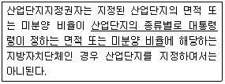

도시계획기사 (2008-09-07 기출문제)
1과목: 도시계획론
1. 미래 도시의 새로운 계획 패러다임의 방향이 아닌 것은?
- 정보화시대로의 변화와 흐름을 반영한 도시계획
- 지속가능한 도시개발로의 인식 전환
- 지역별 특화를 위한 도농 분리적 계획체계로의 전환
- 시민참여의 확대와 계획 및 개발주체의 다양화
(정답률: 알수없음)

2. 다음 중 도시화 현상으로 보기 어려운 것은?
- 2·3차 산업의 종사자수 증가
- 도시의 주·야간 인구의 격차 감소
- 도시지역의 확대
- 도시지역 내 건물의 고층화와 고밀화
(정답률: 알수없음)
3. 다음 중 도시조사자료에 대한 설명이 옳지 않은 것은?
- 1차 자료는 도시계획의 대상이 되는 단위지역이나 당해지역의 주민들로부터 현지조사나 관찰, 면접 등을 통해서 직접적으로 도출한 자료이다.
- 2차 자료는 연구자가 탐구하고자 하는 현상에 대한 정보를 담고 있는 기존의 여러 가지 기록을 의미하는 것으로 서적이나 간행물, 각종 통계자료 등이 해당된다.
- 2차 자료에 비해 1차 자료는 비교적 적은 노력과 비용으로 계획가가 원하는 정확한 정보를 얻을 수 있다.
- 도시계획을 위한 도시조사에서는 1차 자료에 대한 조사와 2차 자료에 대한 조사를 병행하는 것이 일반적이다.
(정답률: 알수없음)
4. 다음 중 도시기본계획에 대한 설명으로 옳지 않은 것은?
- 도시기본계획은 도시관리계획의 상위계획적 성격을 갖는다.
- 도시기본계획은 20년을 단위로 수립되는 장기계획으로, 매 10년마다 타당성 여부를 검토한다.
- 도시기본계획은 물적 측면 뿐 아니라 인구·산업·사회 개발 등 사회·경제적 측면을 포괄하는 종합계획이다.
- 도시기본계획은 광역도시계획에 부합되어야 하며, 도시기본계획의 내용이 광역도시계획의 내용과 다른 때에는 광역도시계획의 내용이 우선한다.
(정답률: 알수없음)
5. 다음 중 일반적인 상업지역의 입지조건으로 알맞지 않은 것은?
- 도시내외에서 접근성이 양호한 지역
- 도시의 경제권과 생활권의 규모를 감안하되 상업·업무·사회·문화시설 등의 집적이 요구되는 지역
- 충분한 용수, 전력, 노동력의 공급이 용이한 지역
- 시설이용의 편리성 및 업무수행의 능률성이 최대한 확보되는 지역
(정답률: 알수없음)
6. 1990년대 이후 미국에서 시작된 도시개발전략으로, 도시공간의 무분별한 확산에 따른 도시문제를 환경계획 및 설계를 통해 해결하고자 하는 건축·도시계획운동을 지칭하는 것은?
- 컴팩트시티
- 어반 빌리지
- 뉴어바니즘
- 생태도시계획
(정답률: 알수없음)
7. 도시계획가가 지리·공간자료를 바탕으로 수행하는 주요활동인 '4M'에 해당하지 않은 것은?
- 측정(Measurement)
- 도면화(Mapping)
- 관찰(Monitoring)
- 제작(Making)
(정답률: 알수없음)
8. 1970년대 중반 이후 미국에 도입된 성장관리정책에 대하여 넬슨(Arthur C. Nelson)과 듀칸(Janes B. Ducan)이 제시한 목적과 거리가 먼 내용은?
- 경제적 형평성 제고
- 효율적인 도시형태 구축
- 납세자의 보호
- 어반 스프롤의 방지
(정답률: 알수없음)
9. 다음 중 초기의 용도지역제한 유클리드 지역제(Euclidean Zoning)에 대한 설명으로 옳지 않은 것은?
- 상위용도(주거 등)를 하위용도(공장 등)로부터 보호하면 충분하다는 전제 하에 누적식 지역제를 채택하였다.
- 실제의 토지이용에 근거하여 발생하는 각종 결과를 기준하여 규제하는 성과규제지역제이다.
- 과도한 민간개발을 막기 위하여 개발촉진보다는 억제에 더 관심을 두었다.
- 토지이용의 규제단위를 각각의 필지로 하여 이를 통해 양호한 시가지를 형성하고자 하였다.
(정답률: 알수없음)
10. 투자의 타당성을 평가하는 방법으로서, 비용-편익분석이 갖는 한계에 대한 설명이 옳지 않은 것은?
- 화폐단위로 환산이 용이한 항목만을 다루기 때문에 대안 평가에서 경제적인 측면만 강조된다.
- 계획안 전체에 대한 형평성을 고려하기 때문에 각 평가 주체에 대한 편익의 경제성이라는 기준이 결여되어 있다.
- 내부수익률을 기준으로 하는 경우, 사업의 전 기간에 걸쳐 일정한 할인율을 가정하기 때문에, 실제 할인율이 차등적으로 적용되는 경우에 문제가 될 수 있다.
- 평가 항목 간의 상충(Trade off) 관계를 반영해 주지 못한다.
(정답률: 알수없음)
11. 도시공간구조 이론 중 Hoyt의 선형이론에서, 선형 형태를 형성하는데 영향을 주는 핵심적인 요인은?
- 가로변 상업지역
- 공업단지의 입지
- 고소득층의 주거지역
- 저소득층의 주거지역
(정답률: 알수없음)
12. 도시지역경제분석의 방법 중 하나인 수출기반모형에 대한 설명으로 옳지 않은 것은?
- 수출산업이란 지역내에서 생산된 상품이나 서비스가 최종적으로 지역 외부인에 의해 소비되는 산업을 말한다.
- 수입산업이란 다른 지역에서 생산된 제품이나 서비스가 지역내 주민에 의해서 소비되는 산업을 말한다.
- 수출산업과 수입산업의 구분은 민간부문의 기업에만 해당하는 것이 아니라 공공부문에서도 적용된다.
- 수출기반모형은 지역경제를 구성하는 산업을 크게 수출산업과 수입산업으로 구분한다.
(정답률: 알수없음)
13. 다음의 설명에 부합되는 도시는?

- 카스트라(Castra)
- 팀가드(Timgad)
- 아오스타(Aosta)
- 폼베이(Pompeii)
(정답률: 알수없음)
14. 다음 중 GIS에 대한 설명으로 옳지 않은 것은?
- GIS는 지리·공간 정보를 받아들여 체계적인 저장·검색·변형·분석하고, 사용자에게 유용한 새로운 형태의 정보로 표현하는 등의 작업을 수행하기 위한 기술이나 작동과정 혹은 도구이다.
- GIS는 기술적인 측면 뿐 아니라 GIS를 사용하는 지원인력 및 시설의 측면을 모두 망라하는 것으로 파악한다.
- GIS를 이용한 공간분석을 통해 입력된 정보를 지리적으로 검색하고 표현할 수 있다.
- 벡터 자료는 정방형 셀을 자료저장과 표현의 기본단위로 하기 때문에 격자형태의 결과물을 생성하게 된다.
(정답률: 알수없음)
15. 다음 중 도시개발 - 정비사업의 유형과 근거법이 바르게 연결된 것은?
- 도시개발사업 - 도시개발법
- 주택재개발사업 - 도시개발법
- 도시재정비촉진사업 - 택지개발촉진법
- 택지개발예정지구지정에 의한 사업 - 주택건설촉진법
(정답률: 알수없음)
16. 경합성과 배제성에 따른 재화의 분류 중 'A'에 속하는 재화에 대한 설명으로 옳은 것은?

- 대가를 지불할 필요성이 없고, 소비를 제한할 방법도 없기 때문에 아무도 생산하려고 하지 않는다.
- 시장기구가 재화를 공급할 수 없기 때문에 공급의 문제가 심각하다.
- 시장기구를 통한 공급이 가능하며, 이렇게 하는 것이 자원배분상 효율적이다.
- 측정이 곤란하고 소비자에게 선택의 여지가 없어 재화의 공급량과 가격 결정에 공공이 개입하게 된다.
(정답률: 알수없음)
17. 토지이용계획을 실현하기 위하여 강제적 수단을 통한 용도지역의 규제내용이 아닌 것은?
- 용도의 규제
- 건폐율의 규제
- 건축물의 소유권 제한
- 건축물의 높이 제한
(정답률: 알수없음)
18. 다음과 같은 특징을 가지고 있는 공원의 종류는?

- 도보권 근린공원
- 광역권 근린공원
- 근린생활권 근린공원
- 도시지역권 근린공원
(정답률: 알수없음)
19. 1893년 시카고에서 개최된 만국박람회를 계기로 D. Burnham의 도시디자인 철학에 따라 모든 도시들은 역사적 공간에 오픈 스페이스를 확보하고 광장과 정원에 분수를 설치하도록 하였으며 도시규모에 따라 공공건축물을 규제하였던 것으로, 이후 미국 도시설계의 기원을 이룬 것은?
- 도시미화운동
- 전원도시운동
- 대도시론
- 이상공업촌
(정답률: 알수없음)
20. 다음 중 환지방식에 의한 도시개발사업의 장점에 대한 설명이 옳지 않는 것은?
- 환지방식은 사업비의 일부를 체비지 매각으로 충당할 수 있어 별도의 큰 자본 없이 사업시행이 가능하다.
- 환지방식은 계획의 시행과 주민과 소유권 보호에 있어 마찰을 최소화하기 때문에 민원이 발생할 소지가 없다.
- 도시개발사업 시행자는 도시개발사업에 필요한 토지 등을 수용 또는 사용할 수 있다.
- 권리의 대상인 토지의 구획·형질에 변경을 가하지만 원칙적으로 토지의 권리관계에 대해서는 변동을 발생시키지 아니한다.
(정답률: 알수없음)
2과목: 도시설계 및 단지계획
21. 다음 중 우리나라에 도시설계 제도가 도입된 것에 관한 설명이 옳지 않은 것은?
- 지구단위계획과 같은 제도를 처음 도입한 것은 건축법을 통해 도시설계 조항을 법제화한 1980년이었다.
- 도시설계를 처음 도입할 당시 주된 관심사는 간선가로변의 미관 개선에 있었다.
- 도시설계 제도가 도입된 지 5년 후 상세계획제도가 도입되었다.
- 도시설계 제도와 관련된 법규 중 지구지정 규정의 신설은 1991년에 이루어졌다.
(정답률: 알수없음)
22. 주거지역의 입지 조건으로 가장 적절하지 못한 것은?
- 홍수나 산사태와 같은 재해로부터 안전한 지형적 조건에 입지하는 것이 좋다.
- 주변의 공업단지나 교통시설 등에 의한 대기오염, 소음이나 진동 등으로 인한 피해가 적은 곳이어야 한다.
- 각종 편익시설의 이용이 편리한 곳이 유리하다.
- 노동력을 확보하는 것이 용이하여야 한다.
(정답률: 알수없음)
23. 페리(Perry)가 근린주구이론에서 하나의 근린단위가 갖고 있어야 하는 기본요소라고 주장한 것 아닌 것은?
- 작은 공원과 운동장
- 초등학교
- 소규모 가게
- 완충녹지
(정답률: 알수없음)
24. 다음 중 주거단지계획의 목표와 가장 거리가 먼 내용은?
- 인간이 쾌적하고 건강한 생활을 하도록 필요한 조건을 갖추어야 한다.
- 공동체 의식을 형성할 수 있도록 주민들이 서로 만나고 대화할 수 있는 시설의 확보가 필요하다.
- 주거환경의 수요자인 주민의 요구와 기호를 충분히 고려하여야 한다.
- 최대한 고층화 하는 것이 개발경제성을 높일 수 있다.
(정답률: 알수없음)
25. 다음 중 지구단위계획에서 결정할 수 있는 도시계획시설에 해당하지 않는 것은?
- 교통시설 - 자동차 및 건설기계 운전학원
- 유통·공급시설 - 공동구
- 공간시설 - 공공공지
- 공공·문화체육시설 - 공공직업훈련시설
(정답률: 알수없음)
26. 다음 중 단지계획의 수립과정을 크게 목표설정단계, 조사·분석단계, 기본구상·대안설정 단계, 기본계획·기본설계단계, 실시설계·집행계획단계로 구분할 때에, 해당 단계에 대한 설명이 옳지 않은 것은?
- 목표설정단계 : 계획의 전제가 되는 목표를 세우는 것과 그 계획목표에 따라 궁극적으로 달성하고자 하는 목적을 규정하고 구체화 하는 단계이다.
- 조사·분석단계 : 답사와 통계적인 자료로부터 기초조사를 수행한다.
- 기본구상·대안설정단계 : 설정한 목표에 따라 계획의 지침과 방향을 작성하는 과정이다.
- 기본계획·기본설계단계 : 건축·토목·조경·각종 설비 등으로 구분되어 각 분야의 전문가에게 의뢰하여 작성한다.
(정답률: 알수없음)
27. 다음 중 오픈스페이스의 기능에 대한 설명으로 옳지 않은 것은?
- 시냇물·연못·동산 등과 같은 자연 경관적 요소들을 제공한다.
- 오픈스페이스의 적극적 확보를 위하여 평탄한 곳과 접근성이 뛰어난 곳을 우선 확보하여야 한다.
- 기존의 자연환경을 보전·향상시켜 줄 수 있는 수단을 제공한다.
- 공기정화를 위한 순환통로의 기능을 수행함으로써 미기후의 형성에 영향을 준다.
(정답률: 알수없음)
28. 영국의 계획도시 할로우(Harlow)에 관한 설명으로 옳지 않은 것은?
- 런던의 주변에 개발된 초기 뉴타운의 대표적인 예이다.
- 도시의 설계는 기버드(F. Gibberd)에 의해 이루어졌으며 고밀도 개발을 원칙으로 하였다.
- 주택지는 크게 4개의 그룹으로 나누어 그 내부에 근린주구를 배치하였다.
- 도시내의 간선도로는 주택지 그룹 사이에 있는 녹지 속을 통과한다.
(정답률: 알수없음)
29. 아파트단지의 계획시 건축물의 특정한 층에서 벽면의 위치가 넘어서는 안 되는 선으로 보행공간의 확보 등이 필요한 경우 지정하는 지구단위계획의 요소는?
- 건축지정선
- 벽면지정선
- 벽면한계선
- 건축한계선
(정답률: 알수없음)
30. 다음 중 500세대 이상의 주택을 건설하는 주택단지에 의무적으로 설치하도록 설치하지 않아도 되는 시설은?(단, 주택건설 기준 등에 관한 규정 기준)
- 관리사무소
- 어린이놀이터
- 주민운동시설
- 유치원
(정답률: 알수없음)
31. 다음 중 공동구(지하매설물)의 장점이 아닌 것은?
- 가로 및 도시미관에 도움을 준다.
- 노면의 이용가치를 높일 수 있다.
- 빈번한 노면 굴착을 하지 않아도 된다.
- 최초의 건설비가 적게 든다.
(정답률: 알수없음)
32. 다음 중 제2종 지구단위계획의 유형이 아닌 것은?
- 주거형
- 역사문화형
- 유통형
- 관광휴양형
(정답률: 알수없음)
33. 다음 중 생활편익시설의 배치시, 노선형에 비해 집합형으로 배치하였을 때의 특징에 해당하지 않는 것은?
- 시설 상호간의 유기적 관련성이 높다.
- 상점의 입장에서는 충분한 주차공간의 확보가 어렵다.
- 공공공간의 공동이용으로 용지의 면적이 절약된다.
- 활력있는 가로 분위기를 조성할 수 있다.
(정답률: 알수없음)
34. 지구단위계획에서의 밀도계획에 대한 설명으로 가장 거리가 먼 것은?
- 건폐율 인센티브는 건폐율 보상과 건폐율 완화의 두 가지로 나누어 적용된다.
- 허용용적률이란 기준용적률에 용적률완화를 합산한 용적률을 말한다.
- 전통한옥지구에서 계획건폐율이 조례건폐율보다 완화되어 적용된 경우 상한건폐울의 완화가 가능하다.
- 허용용적률은 기준용적률의 1.5배 이내가 바람직하다.
(정답률: 알수없음)
35. 보행자통행이 주이고 차량통행이 부수적인 도로계획기법으로, 1970년 네덜란드 델프트시에서 최초로 등장한 본엘프(Woonerf)가 대표적인 것은?
- 보차공존도로
- 보행전용도로
- 카프리존
- 보차혼용도로
(정답률: 알수없음)
36. 다음 중 아래의 특징에 가장 부합하는 주택유형은?

- 단독주택
- 다세대주택
- 연립주택
- 아파트
(정답률: 알수없음)
37. 다음 중 밀톤케인즈(Milton Keynes) 신도시계획의 주요 내용으로 거리가 먼 것은?
- RED WAY를 통해 차량과 보행자를 분리하고 있다.
- 주요 간선도로는 격자형으로 이루어져 있다.
- 커뮤니티센터는 모든 주택으로부터 500m를 넘지 않도록 계획되어 있다.
- 초기의 뉴타운에서와 같이 내부로 향하는 내향적 근린주구로서 계획되었다.
(정답률: 알수없음)
38. 다음 중 공동주택건립을 위한 지구단위계획 작성지침 중 친환경 계획요소에 속하지 않는 것은?
- 비오톱 조성
- 투수성 바닥처리
- 자원 재활용
- 조망권 확보
(정답률: 알수없음)
39. 순 인구밀도가 200인/ha이고 주택용지율이 60%일 때, 총 인구밀도는?
- 80인/ha
- 100인/ha
- 110인/ha
- 120인/ha
(정답률: 알수없음)
40. 인사동길과 같이 특화거리 또는 단지를 조성하는 경우, 혹은 공공적 성격이 강하여 특별히 확보해야 하는 시설의 경우에 권장하는 용도제한의 종류 구분에 해당하는 것은?
- 불허용도
- 권장용도
- 지정용도
- 지하층용도
(정답률: 알수없음)
3과목: 도시개발론
41. 도시계획시설로서의 도로의 일반적 결정기준에 관한 설명이 옳지 않는 것은?
- 기존 도로를 확장하는 경우에는 원칙적으로 양쪽 방향으로 동일한 폭만큼씩 확장한다.
- 국도대체우회도로에는 집산도로 또는 국지도로가 직접 연결되지 아니하도록 한다.
- 도로의 폭은 당해 시·군의 인구 및 발전전망을 감안한 교통수단별 교통량 분담계획, 당해 도로의 기능과 인근의 토지이용계획에 의하여 정한다.
- 도로는 전력·전화선을 가설하거나 변압기탑·개폐기탑 등 지상시설물이나 상하수도·공동구 등 지하시설물을 설치할 수 있는 기반이 되도록 해야 한다.
(정답률: 알수없음)
42. 부동산 시장 및 각종 생산과 설비를 위한 투자의 경우에도 널리 사용되는 개념으로, 기업의 부채에 대한 이자가 영업이익의 변동 세후 순이익의 변동을 확대시키는 현상은?
- 승수효과
- 꾸르노효과
- 레버리지효과
- 파레토효과
(정답률: 알수없음)
43. 다음 중 ( ) 안에 들어갈 말이 옳은 것은?

- ①1/2, ②1/2
- ①1/2, ②2/3
- ①2/3, ②1/2
- ①2/3, ②2/3
(정답률: 알수없음)
44. 다음 중 프로젝트 금융(Project Financing)에 대한 설명이 옳지 않은 것은?
- 별도의 프로젝트회사를 설립하여 사업을 수행하므로 비소구금융 및 부외금융의 효과를 얻을 수 있다.
- 금융기관이 부담하는 각종 위험이 통상적인 기업금융에 비해 적은 편이다.
- 사업추진 과정 상의 제약요인들을 다양하고 유연한 사업기법을 적용하여 사업성과 생산성을 높일 수 있다.
- 다양한 이해관계자들의 협상에 의해 이루어지기 때문에 복잡한 금융절차를 가진다.
(정답률: 알수없음)
45. 다음 중 전철 정차 지점 혹은 역사에서 평균 600m의 보행거리 내에 있는 토지를 복합고밀로 개발하여 대중교통의 이용율을 높임으로써 교통혼잡과 도시에너지 소비를 경감시키고자 Peter Calthorpe에 의해 주창된 역세권 개발은?
- TDR
- TOD
- PUD
- TOP
(정답률: 알수없음)
46. 부동산 투자의 유형 중 자본의 성격은 자본투자(Equity Financing)이면서 운용시장의 형태가 공개시장(Public Market)인 것은?
- 사모부동산펀드
- 부동산투자회사
- 상업용저당채권
- 직접대출
(정답률: 알수없음)
47. 다음 중 프로젝트의 사업성을 평가하는 지표로 가장 적절하지 못한 것은?
- 순현재가치(NPV)
- 내부수익률(IRR)
- 할인율(Discount Rate)
- 수익성지수(PI)
(정답률: 알수없음)
48. 다음 중 수출기반모형이 가정하는 사항이 아닌 것은?
- 동일한 노동 생산성
- 동일한 소비수준
- 폐쇄된 경제
- 동일한 생산비
(정답률: 알수없음)
49. 다음 중 도시개발법에 규정된 내용에 대한 설명이 옳지 않은 것은?
- 도시개발구역의 전부를 환지 방식으로 시행하는 경우에는 대통령령으로 정하는 정부출연기관을 시행자로 지정한다.
- 도시개발구역 지정권자는 도시개발구역을 지정하려면 해당 도시개발구역에 대한 도시개발사업의 계획을 수립하여야 한다.
- 시행자는 도시개발사업의 시행을 위하여 필요하면 도시개발구역의 토지에 대하여 환지 예정지를 지정할 수 있다.
- 환지계획에서 환지를 정하지 아니한 종전의 토지에 있던 권리는 그 환지처분이 공고된 날이 끝나는 때에 소멸한다.
(정답률: 알수없음)
50. 마케팅 목표를 이루기 위하여 마케팅 활동에서 사용되는 여러 가지 전략·전술을 종합적으로 균형이 잡히도록 조정·구성하는 마케팅믹스(4P's Mix)의 4P가 옳은 것은?
- Product, Price, Place, Promotion
- Property, Price, Place, Pride
- Product, Price, Purpose, Promotion
- Property, Price, Purpose, Pride
(정답률: 알수없음)
51. 다음 중 주민참여형 도시개발 유형이 아닌 것은?
- 주민발의
- 개발협정
- 주민투표
- 공공협약
(정답률: 알수없음)
52. 다음 중 Tatsuno가 진술한 과학기술도시(Science City 또는 Technopolis)의 세 가지 주요 기능과 가장 거리가 먼 것은?
- 주거
- 레저
- 연구
- 산업
(정답률: 알수없음)
53. 도시환경 및 시설에 대해 현재까지는 불량·노후화 현상이 발생하지 않았으나 현 상태로 방치할 경우 환경악화가 예상되는 지역에 예방적 조처로 시행하는 재개발 방식은?
- 철거재개발
- 수복재개발
- 전면재개발
- 보전재개발
(정답률: 알수없음)
54. 다음 중 환지 계획 작성시 포함되지 않는 사항은?
- 환지 설계
- 필지별로 된 환지명세
- 필지별과 권리별로 된 청산 대상 토지 명세
- 환지 청산금 징수 시기
(정답률: 알수없음)
55. 1853년 나폴레옹 3세의 명령에 의해 추진된 것으로, 근대적 도시재개발의 시작이라고 할 수 있는 것은?
- 런던 개조 계획
- 파리 개조 계획
- 콜럼비아 도시미 운동
- 말로법에 의한 주거환경개선사업
(정답률: 알수없음)
56. 도시(부동산)개발을 위한 자금조달 수단 중 신디케이션, 공동, 합작사업과 같은 지분조달방식에 대한 설명에 해당되지 않는 것은?
- 지분투자자가 항상 사업계획에 동의하는 것은 아니므로 이에 따른 문제의 발생도 고려하여야 한다.
- 지분투자로 자금을 조달하게 되면 투자금액을 상환하지 않아도 되므로 특히 현금이 긴요할 때 사용할 수 있는 주요 투자수단이 된다.
- 회사 통제권의 일부를 포기해야 한다는 단점이 있다.
- 중소기업의 경우 신용이 취약한 기업은 차입수단, 규모, 시기, 비용상의 문제점이 존재한다.
(정답률: 알수없음)
57. 도시개발사업의 각 아이템별로 정량적 방법에 의해 추정하는 수요 중, 현재 다른 곳에서 상업활동을 하고 있는데 어떤 이유로 개발 대상부지에 입주하여 상업활동을 하거나 업종을 바꾸고자 하는 경우에의 수요는?
- 가변수요
- 이전수요
- 신규수요
- 증설수요
(정답률: 알수없음)
58. 개발사업의 위험을 재무·건설·운영·정책 및 환경위험의 네 가지로 분류할 때, 사업의 진행단계에서 사업계획 변동 위험, 분양 및 임대 위험, 소유권 이전 단계의 위험이 존재하는 유형은?
- 재무위험
- 건설위험
- 운영위험
- 정책 및 환경위험
(정답률: 알수없음)
59. 바다, 하천, 호수 등의 공간을 가지는 육지에 인공적으로 개발된 공간을 무엇이라 하는가?
- 워터프론트
- 역세권
- 지하공간
- 텔레포트
(정답률: 알수없음)
60. 다음의 경우 상업용지의 면적을 추계한 값이 옳은 것은?

- 700,000 m2
- 1,000,000 m2
- 1.020,400 m2
- 1,120,000 m2
(정답률: 알수없음)
4과목: 국토 및 지역계획
61. 다음 중 국토계획의 상호관계에 대한 설명이 옳지 않은 것은?
- 국토종합계획은 20년을 단위로 하여 수립한다.
- 부문별계획과 지역계획은 국토종합계획과 별개로 수립한다.
- 국토종합계획은 도종합계획 및 시군종합계획의 기본이 된다.
- 도종합계획은 당해 도의 관할 구역 안에서 수립되는 시군종합계획의 기본이 된다.
(정답률: 알수없음)
62. 다음 중 경제성장의 초기에는 지역격차가 증가하지만 일정한 시간이 지나면 소득격차가 점차 감소한다는 지역간 격차이론을 주장한 학자는?
- Williamson
- Isard
- Rostow
- Berry
(정답률: 알수없음)
63. 지역개발과 관련하여, 경제적으로 이미 발달한 사회에서의 쇄신확산이 일반적으로 대도시에서 점차 작은 도시로 확산한다는 패턴을 뜻하는 것은?
- 전염적 확산
- 계층적 확산
- 이동적 확산
- 파상적 확산
(정답률: 알수없음)
64. 크리스탈러의 중심지 이론에서 1개의 중심지가 그 중심지 및 3개의 하위 중심지를 포섭하는 원리로 맞는 것은?
- 시장의 원리
- 행정의 원리
- 교통의 원리
- 근린의 원리
(정답률: 알수없음)
65. 다음 중 광역도시계획에 대한 설명으로 옳은 것은?
- 광역도시계획에는 광역계획권의 지정목적을 달성하는데 필요한 사항에 대한 정책방향이 포함되어야 한다.
- 국토계획의 부문별계획의 상위계획이다.
- 광역도시계획은 수도권의 외연적인 확산을 통제하는 것을 주요 목적으로 한다.
- 광역도시계획의 수립기준은 당해 시·군의 합의에 의해 결정된다.
(정답률: 알수없음)
66. 가스텔(Castells)이 사회구성이론을 통해 도시구조의 발전과정을 설명하고자 도시공간을 경제부문 측면에서 분류한 4가지의 공간적인 유형이 아닌 것은?
- 레저공간(Leisure Space)
- 생산공간(Production Space)
- 교환공간(Exchange Space)
- 소비공간(Consumption Space)
(정답률: 알수없음)
67. 다음 입지계수법(Location Quotient Method)에 대한 설명 중 옳지 않은 것은?
- A지역 특정산업의 입지계수(LQ값)가 1보다 크면 A지역은 해당 산업이 비교적 특화되어 있다는 의미이다.
- 입지계수법은 중간재의 특성을 고려한 장점이 있다.
- 수출기반모형 중 하나인 입지계수법은 수요모형에 해당한다.
- 어떤 산업의 생산품에 대한 수요수준이 전국적으로 동일하다고 가정하는 모순이 있다.
(정답률: 알수없음)
68. 로렌츠곡선(Lorenz curve)을 통해 파악할 수 있는 것은?
- 지역생산구조
- 지역소득분배
- 지역고용구조
- 지역소득수준
(정답률: 알수없음)
69. 다음 중 공간적 거점을 중심으로 상호의존적 또는 상호보완적 관계를 가진 몇 개의 공간단위를 하나로 묶은 지역을 일컫는 것은?
- 동질지역
- 중간지역
- 낙후지역
- 결절지역
(정답률: 알수없음)
70. 다음 지역계획의 이론들을 그 발생시기가 빠른 것부터 순서대로 나열된 것은?

- ① - ④ - ③ - ②
- ③ - ① - ④ - ②
- ① - ② - ③ - ④
- ① - ③ - ② - ④
(정답률: 알수없음)
71. 다음 중 수도권 정비계획법에 의한 권역구분이 아닌 것은?
- 자연보전권역
- 성장관리권역
- 개발제한권역
- 과밀억제권역
(정답률: 알수없음)
72. 안스타인(S. Arnstein)의 8단계 주민참여 과정에서 주민권력(degrees of citizen power)단계가 아닌 것은?
- 주민통제(citizen control)
- 권한위임(delegated power)
- 협동관계(partnership)
- 상담(consultation)
(정답률: 알수없음)
73. 지역이 가지고 있는 입지특성이나 생산환경의 변화에 따른 추세를 고려하여 지역산업의 전문화 정도를 추계하는 지역산업 성장분석기법은?
- 변이할당분석법(Shift-Share Analysis)
- 경제기반승수법(Economic Base Multiflier Analysis)
- 경제활동참가율(Labor Force Participation Rate)
- 지역산업연관분석(Input-Output Analysis)
(정답률: 알수없음)
74. 도시 순위-규모 법칙에서 말하는 q 값(순위규모계수)이 10년 전 1.0에서 현재 2.0으로 증가한 어느 나라의 도시체계의 특징에 관한 설명으로서 가장 적절한 것은?
- 10년 전보다 수위도시의 인구가 다른 지역으로 분산하여 분포하는 현상으로 전환되었다.
- 10년 전에는 인구가 균형을 이루었으나, 현재는 도시지역인구가 농촌지역의 2배로 되었다.
- 10년 전보다 수위도시 또는 소수의 대도시에 인구가 더욱 많이 집중하였다.
- 10년 전보다 도시화 속도가 2배 증가하였다.
(정답률: 알수없음)
75. 대도시 성장관리 정책의 하나인 하바나 전략에 대한 설명으로 옳은 것은?
- 신분증이나 입주과세 등의 방법으로 인구의 유입을 원칙적으로 직접 통제하는 방법이다.
- 종주도시내에 새로운 시설의 설치 및 기존시설의 수리도 제한하여 노후화 되도록 방치하는 것이다.
- 인구 및 산업시설을 국가 계획적 측면에서 분산 이전시키는 것이다.
- 인구 유발시설에 대해서 인구 영향평가를 행한 후 허가하는 것이다.
(정답률: 알수없음)
76. 다음 중 토다로(Michael Todaro)의 인구이동 모형에 대한 설명으로 가장 적합한 것은?
- 주로 선진국의 농촌과 도시간의 인구이동현상을 설명하는 모형이다.
- 도시에서 주변 농촌으로 역류하는 인구이동현상을 설명하는 모형이다.
- 실질소득보다 기대소득의 개념으로 인구이동현상을 설명하는 모형이다.
- 사회주의 국가의 농촌과 도시간의 인구이동현상을 설명하는 모형이다.
(정답률: 알수없음)
77. 다음 각 학자들과 그들이 주장한 지역구분이 바르게 짝지어진 것은?
- Boudeville - 대도시·중소도시·농촌지역
- Hilhorst - 과밀·중간·낙후지역
- Klaassen - 번성·발전도상저개발·잠재적저개발·저개발지역
- Hansen - 동질·분극·계획·사업지역
(정답률: 알수없음)
78. 다음 중 성장거점이론에 관한 설명이 옳지 않은 것은?
- 성장극(growth pole)이라는 용어는 프랑스의 경제학자 퍼로우(Francoise Perroux)가 처음 사용한 것이다.
- 미르달(Gunner Myrdal)에 의하면 성장거점은 낙후된 산업도시이고, 이 도시는 중심도시와의 순환인과관계와 역류효과로 인해 성장하게 된다고 한다.
- 퍼로우의 경제 공간적 의미의 성장극은 일정한 공간상에서 산업활동의 흐름에 의하여 이루어지는 결절점(nodal point)이 된다.
- 허쉬맨(Albert O. Hirshman)은 성장거점이론을 극화(polarized)효과와 적하(trickling down)효과로 설명하고 있다.
(정답률: 알수없음)
79. 웨버(Alfred Weber)의 고전적 입지론에서 말하는 입지요인에 해당되지 않는 것은?
- 운송비
- 노동비
- 집적경제
- 소비자 규모
(정답률: 알수없음)
80. 제4차 국토종합계획 수정계획(2000-2020)에서 ⌜약동하는 통합국토⌟의 실현을 위하여 제시한 5대 기본목표에 해당되지 않는 것은?
- 지속가능한 녹색국토
- 상생하는 균형국토
- 경쟁력있는 개방국토
- 혁신적인 정보국토
(정답률: 알수없음)
5과목: 도시계획관계법규
81. 국토의 계획 및 이용에 관한 법률상 도시계획시설사업의 시행자가 도시계획시설사업에 관한 조사를 위해 타인의 토지에 출입하고자 할 때에는 특별시장·광역시장·시장 또는 군수의 허가를 받아야 하며, 출입하고자 하는 날의 몇일 전까지 당해 토지의 소유자·점유자 또는 관리인에게 그 일시와 장소를 통지하여야 하는가?(단, 도시계획시설사업의 시행자가 행정청인 경우는 제외)
- 14일
- 7일
- 5일
- 3일
(정답률: 알수없음)
82. 산업입지 및 개발에 관한 법률상 산업단지지정의 제한에 대한 아래 설명과 관련하여, 밑줄 그은 부분에 대한 기준이 잘못 제시된 것은?

- 국가산업단지 : 특별시·광역시·도별로 미분양 비율 15% 이상
- 일반산업단지 : 시·도별로 미분양 비율 30% 이상
- 도시첨단산업단지 : 시·도별로 면적 300만m2 이상
- 농공단지 : 시·군·자치구별로 100만m2부터 200만m2까지의 범위 안에 농공단지개발세부지침이 정하는 면적이상 또는 미분양 비율 30% 이상
(정답률: 알수없음)
83. 체육시설의 설치 및 이용에 관한 법률에서 규정하는 체육시설업의 종류 중 등록 체육시설업에 해당되지 않는 것은?
- 골프장업
- 승마장업
- 스키장업
- 자동차 경주장업
(정답률: 알수없음)
84. 도시개발법상 환지를 정한 토지에 대한 일반적인 청산금 징수시기는?
- 등기완료 후
- 공사시행 완료 보고 후
- 환지처분 공고 후
- 환지계획 인가 후
(정답률: 알수없음)
85. 다음 중 택지개발촉진법에 의한 예정지구 지정 후 도시개발법에 의한 도시개발사업을 실시할 수 있는 경우는?
- 사업시행자가 실시계획에서 정한 사업시행 기간 내에 공사에 착수하지 아니한 경우
- 택지개발사업을 시행할 필요가 없거나 계속 시행이 불가능하다고 인정되는 경우
- 당해 지역의 지가가 인근의 다른 예정지구의 지가에 비해 현저히 높아 환지방식 이외 방법으로는 택지개발이 심히 곤란한 경우
- 주택건설사업자가 예정지구 안의 토지면적 중 대통령령이 정하는 비율 이상의 토지를 소유한 경우
(정답률: 알수없음)
86. 다음 중 수도권정비실무위원회의 구성에 대한 설명이 옳지 않은 것은?
- 위원장은 1인과 25인 이내의 위원으로 구성한다.
- 위원장은 국토해양부장관이 된다.
- 공무원이 아닌 위원의 임기는 2년으로 한다.
- 서무를 처리하기 위하여 간사 1명을 둔다.
(정답률: 알수없음)
87. 다음 중 건축법상 공동주택에 해당하지 않는 것은?
- 연립주택
- 다가구주택
- 다세대주택
- 기숙사
(정답률: 알수없음)
88. 관광지 및 관광단지의 개발에 대한 설명으로 적절하지 않은 것은?
- 문화체육관광부장관은 전국을 대상으로 관광개발기본계획을 수립하여야 한다.
- 관광지 및 관광단지는 기본계획과 권역계획을 기준으로 시장·군수 또는 구청장이 지정한다.
- 관광개발기본계획에는 관광권역의 설정에 관한 내용이 포함된다.
- 권역계획은 그 지역을 관할하는 시·도지사가 수립하여야 한다.
(정답률: 알수없음)
89. 도시 및 주거환경 정비법 상 청산금을 지급받을 권리는 소유권 이전의 고시일 다음날부터 얼마간 행사하지 않을 경우 소멸하는가?
- 1년간
- 3년간
- 4년간
- 5년간
(정답률: 알수없음)
90. 도시공원 및 녹지 등에 관한 법률상 도시공원이 입장료 또는 공원시설 사용료를 징수하기 위해 갖추어야 할 공원시설이 아닌 것은?(단, 공원시설은 당해 도시공원의 기능을 충분히 발휘할 수 있는 규모임.)
- 공원시설 중 조경·휴양·편익시설 및 공원관리시설
- 국토해양부령이 정하는 5개 이상의 유희시설
- 2종목 이상의 운동시설이나 교양시설
- 공원시설 중 2종류 이상의 광장
(정답률: 알수없음)
91. 다음 중 건축법상 시설군과 그 시설군에 속하는 건축물의 용도가 잘못 연결된 것은?
- 전기통신시설군 - 발전시설
- 문화집회시설군 - 운동시설
- 영업시설군 - 숙박시설
- 주거업무시설군 - 단독주택
(정답률: 알수없음)
92. 수도권정비계획법상 업무용 시설 등이 주용도인 업무용·판매용·복합용건축물과 중앙행정기관의 청사에 대한 과밀부담금의 산정방식으로 옳지 않은 것은?(단, 중앙행정기관의 청사는 수도권정비위원회의 심의를 거친 것임)
- 주차장면적과 기초공제면적의 합계면적이 기준면적을 초과하는 업무용 건축물을 신축하는 경우 : ( 신축면적 - 주차장면적 - 5,000m2 ) × 단위면적당 건축비 × 0.1
- 기존면적이 기준면적을 초과하는 업무용건축물을 증축하는 경우 : ( 전체면적 - 기존면적 - 증축면적 중 주차장 면적 ) × 단위면적당 건축비 × 0.1
- 연면적이 1,000m2 이상인 중앙행정기관 청사를 신축하는 경우 : ( 신축면적 - 주차장면적 - 기초공제면적) × 단위면적당 건축비 × 0.1
- 중앙행정기관 청사의 연면적을 600m2 에서 1,200m2 로 증축하는 경우 : ( 전체면적 - 기존면적 - 증축면적 중 주차장 면적 ) × 단위면적당 건축비 × 0.1
(정답률: 알수없음)
93. 주택법상 100호 이상의 주택건설사업을 시행하는 경우, 간선시설의 설치비용을 국가가 2분의 1의 범위 안에서 보조할 수 있는 시설에 해당하는 것은?
- 전기시설
- 지역난방시설
- 통신시설
- 상하수도 시설
(정답률: 알수없음)
94. 다음 중 수도권정비계획법상 성장관리권역 안에서 시설의 신설·증설에 대한 허가가 가능하지 않은 경우는?
- 수도권 안에서 학교를 이전하는 경우
- 수도권정비위원회의 심의를 거쳐 입학정원이 50 인 이내인 대학을 신설하는 경우
- 수도권 안에서 이전하는 연수시설의 규모를 종전 규모의 2배로 신축하는 경우
- 기존 연수시설의 건축물 연면적의 100분의 20의 범위 안에서 증축하는 경우
(정답률: 알수없음)
95. 주차장법상 노외주차장인 주차전용건축물에 대한 높이제한 기준으로 옳지 않은 것은?
- 대지가 너비 10m 의 도로에 접하는 경우 - 건축물의 각 부분의 높이는 그 부분으로부터 대지에 접한 도로의 반대쪽 경계선까지의 수평거리의 3배 이하
- 대지가 너비 12m 의 도로에 접하는 경우 - 건축물의 각 부분의 높이는 그 부분으로부터 대지에 접한 도로의 반대쪽 경계선까지의 수평거리의 3배 이하
- 대지가 너비 18m 의 도로에 접하는 경우 - 건축물의 각 부분의 높이는 그 부분으로부터 대지에 접한 도로의 반대쪽 경계선까지의 수평거리의 2배 이하
- 대지가 너비 24m 의 도로에 접하는 경우 - 건축물의 각 부분의 높이는 그 부분으로부터 대지에 접한 도로의 반대쪽 경계선까지의 수평거리의 1.5배 이하
(정답률: 알수없음)
96. 다음 중 국토기본법에 의한 국토계획의 종류 중 지역계획의 범위에 해당하지 않는 것은?
- 수도권정비계획
- 광역권개발계획
- 개발촉진지구개발계획
- 특정지역개발계획
(정답률: 알수없음)
97. 다음 중 시가화조정구역의 지정에 관한 설명이 옳지 않은 것은?
- 시가화를 유보할 수 있는 기간은 5년 이상 20년 이내이다.
- 국토해양부장관은 시가화조정구역의 지정 또는 변경을 도시관리계획으로 결정할 수 있다.
- 시가화조정구역의 지정에 관한 도시관리계획의 결정은 시가화 유보기간이 만료된 날로부터 효력을 상실한다.
- 시가화조정구역 지정의 실효고시는 실효일자 및 실효사유와 실효된 도시관리계획의 내용을 관보에 게재하는 방법에 의한다.
(정답률: 알수없음)
98. 개발제한구역이 해제된 지역에 대하여 해제 후 최초로 결정되는 도시관리계획의 내용이 해제의 목적이나 용도에 부합하지 아니하는 경우, 그 도시관리계획에 대하여 국토해양부장관이 관할 시장 또는 군수에게 조정하도록 요구하는 기준 기간으로 옳은 것은?
- 도시관리계획이 결정 · 고시된 날부터 6개월 이내
- 도시관리계획이 결정 · 고시된 날부터 3개월 이내
- 도시관리계획이 결정 · 고시된 날부터 1개월 이내
- 도시관리계획이 결정 · 고시된 날부터 14일 이내
(정답률: 알수없음)
99. 대한주택공사가 동일한 규모의 주택을 대량으로 건설하는 주택건설사업계획에 대하여 표본설계도서에 의한 승인을 신청하는 경우 제출하여야 할 서류에 해당되지 않는 것은?
- 주택건설사업계획승인신청서
- 주택건설사업계획서
- 주택과 부대시설 및 복리시설의 배치도
- 대지조성공사설계도서
(정답률: 알수없음)
100. 다음 중 교통광장에 대한 설명이 옳지 않은 것은?
- 교통광장은 교차점광장·역전광장 및 주요시설광장으로 구분한다.
- 교차점광장은 각종 차량과 보행자를 원활하게 소통시키기 위하여 필요한 곳에 설치한다.
- 역전광장은 대중교통수단 및 주차시설과 원활하게 연계되도록 한다.
- 주요시설광장에는 주민의 집회·행사 또는 휴식을 위한 시설과 보행자의 통행에 지장이 없는 시설을 설치한다.
(정답률: 알수없음)